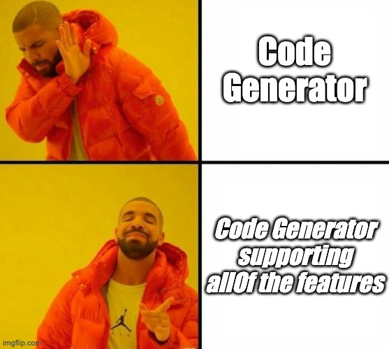

# Kiota </img> ### this is not your father's OpenAPI Code Generator
Andrea Peruffo
@and_prf
## Open Source <img style="width: 10%;" src="imgs/apicurio.png"> <br/> - https://github.com/apicurio/apicurio-registry - https://github.com/fabric8io/kubernetes-client - https://github.com/microsoft/kiota
## Agenda - OpenAPI - Alternatives - Kiota design - Kiota experience
## OpenAPI Specification <img src="./imgs/openapi-logo.png" height="5%" width="5%" style="height: 5%; width: 5%;"></img> **Defines a standard, language-agnostic interface to HTTP** ... <br /> An OpenAPI definition **can be used by** ... **code generation tools** to generate ... **clients** in various programming languages ...
## Contract first </img>
## OpenAPI Example <img src="./imgs/openapi-logo.png" height="5%" width="5%" style="height: 5%; width: 5%;"></img> How it looks like <br /> PetStore
**the best code generator support possible for OpenAPI and JSON Schema features**  <br />
## Options - Manual ```java RequestBody formBody = new FormBody.Builder() .add("username", "test") .add("password", "test") .build(); Request request = new Request.Builder() .url(BASE_URL + "/users") .post(formBody) .build(); Call call = client.newCall(request); call.execute(); ```
## Options - OpenAPI generator <br /> <br />
## Options - OpenAPI generator <br /> <br />
## Options - OpenAPI generator <br /> <br />
## Options - OpenAPI generator <br /> <br />
## Kiota Design <br />
## Kiota Design <br />
## Kiota Design <br />
## Kiota Design <br />
## Kiota Core Libraries <br />
## Kiota Core Libraries <br />
## Kiota Tools - CLI - VS Code Extension - Maven plugin - WASM (browser)
## Kiota Experience *** ###### Java ```java var adapter = new OkHttpRequestAdapter(new AnonymousAuthenticationProvider()); var client = new PostsClient(adapter); client.posts().get() .thenAccept(allPosts -> { System.out.printf("Retrieved %d posts.%n", allPosts.size()); }); ``` *** ###### Python ```python request_adapter = HttpxRequestAdapter(AnonymousAuthenticationProvider()) client = PostsClient(request_adapter) all_posts = await client.posts.get() print(f"Retrieved {len(all_posts)} posts.") ```
## Kiota Docs [https://learn.microsoft.com/en-us/openapi/](https://learn.microsoft.com/en-us/openapi/)
## Kiota Demo 1. Python 2. Java 3. Apicurio UI
## Kiota Community - https://github.com/microsoft/kiota - https://github.com/microsoft/kiota-java - https://github.com/redhat-developer/kiota-java-extra <br />
## Kiota Goodies - ESPANDERE - Fast generation of code - Seamless upgradeability of OpenAPI descriptions - Search functionalities
## Kiota Goodies - ESPANDERE - Minimizes external dependencies - Generate code for only a subset of an OpenAPI description - Generates code that enables IDE autocomplete to aid in API discovery
## Kiota Goodies - ESPANDERE - Languages: C#, Go, Java, PHP, Python, Ruby, Shell, Swift and Typescript - Reference implementation covering full capabilities of OpenAPI descriptions
# Thanks! <br/> <a href="http://andreaperuffo.com/kiota-ignite-deck/">http://andreaperuffo.com/kiota-ignite-deck/</a> <br/> <a href="https://github.com/andreaTP/kiota-ignite-deck">https://github.com/andreaTP/kiota-ignite-deck</a> <br/>